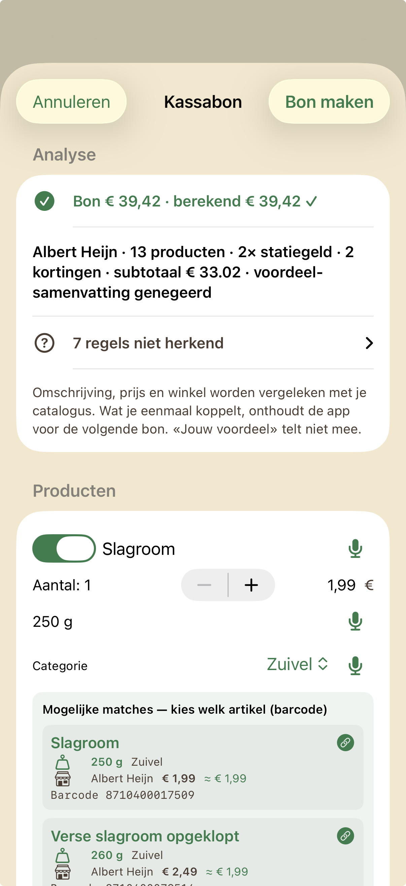
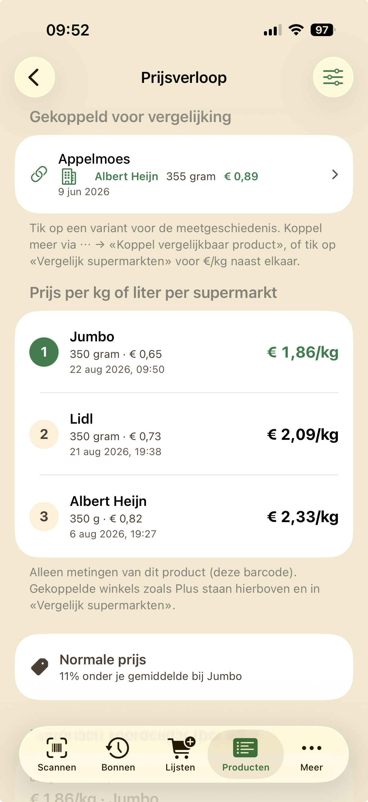
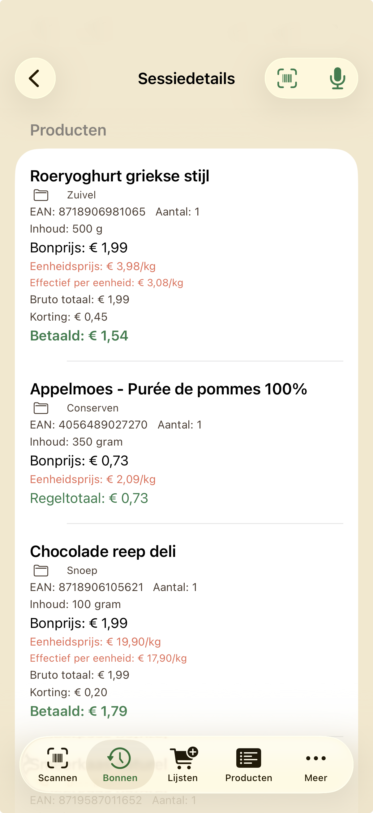
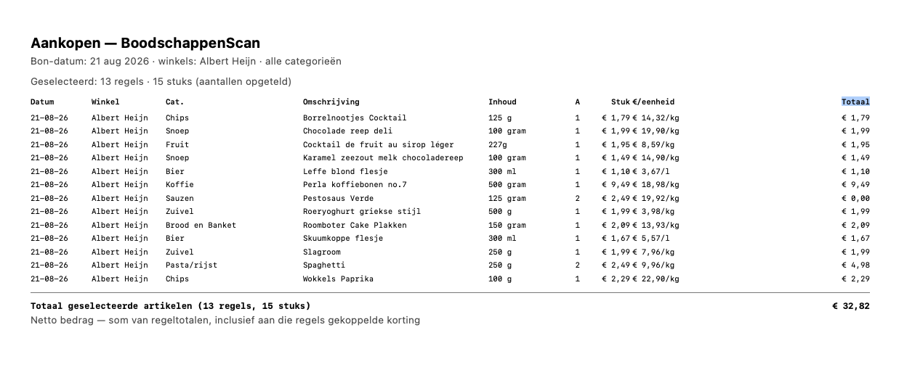

1. Snel beginnen
Open de app en kies bovenaan je supermarkt. Tik op Nieuwe bon starten om te beginnen met scannen. Heb je vandaag al bij deze winkel gescand? Dan zie je in plaats daarvan Verder met scannen — je gaat dan verder waar je gebleven was.
Liever geen camera tijdens het winkelen? Gebruik Kassabon inlezen op het startscherm om je kassabon achteraf via een foto of PDF te laten uitlezen — zie hoofdstuk 3.
Wil je een bon van een eerdere dag alsnog invoeren? Ga naar tab Meer → Bon invoeren voor eerdere datum, kies de datum in de kalender en scan of voer je bon daarna in zoals gewoonlijk.
Je catalogus begint leeg en groeit vanzelf: elk product dat je scant, invoert of via een ingelezen bon toevoegt, komt erin te staan. Vul steeds de betaalde prijs én de inhoud (gram, ml of stuks) in — dat is nodig om later eerlijk te kunnen vergelijken tussen winkels.
De eerste keer zie je nog weinig terug — dat is normaal. Pas na een paar bonnen, en zeker na scans bij meerdere supermarkten, wordt de vergelijking bruikbaar. Hoe secuurder je in het begin invult, hoe minder je later hoeft te corrigeren.

2. Boodschappen scannen
Barcode scannen
Richt de camera op de streepjescode van een product. Herkent de app het al, dan verschijnt het meteen op je bon. Onbekend? Dan vraagt de app om de naam, prijs, inhoud en categorie te controleren en eventueel aan te vullen.
Scan je hetzelfde product nog een keer, dan gaat het aantal automatisch één omhoog — er komt geen tweede regel bij. Je kunt het aantal ook zelf aanpassen met de +/− knoppen naast elke regel.
Vul altijd de inhoud in (bijvoorbeeld «500 g» of «1 l»). Zonder inhoud kan de app geen prijs per kilo, liter of stuk berekenen — en dus ook niet goed vergelijken tussen winkels. Zet het gewicht in het inhoud-veld, niet in de productnaam — dan herkent de app dezelfde producten bij andere winkels beter.

Geen barcode? Typ het in
Werkt scannen niet, of gaat het om losse groente of bakkerijproducten? Tik op Typen en vul het product handmatig in. Bij elk veld kun je ook het microfoon-icoon gebruiken om in te spreken in plaats van te typen.

Meer over de Catalogus-knop
Tik tijdens het scannen op Catalogus om snel een product te kiezen dat je al eerder hebt gescand of ingevoerd — handig als scannen even niet lukt, of voor een vaste boodschap zonder barcode. De app vult naam, prijs en inhoud alvast in vanuit je catalogus; controleer daarna gewoon aantal, prijs en inhoud zoals bij elke andere regel.
Extra: korting, statiegeld en meer
Niet elke regel op een bon is een product. Tik op Extra voor:
- Korting — koppel deze het liefst aan een product met dezelfde naam op je bon, anders telt hij niet mee in je prijsgeschiedenis.
- Statiegeld en Emballage — voor blikjes, flessen en kratten. Na het scannen van een blikje of fles stelt de app dit vaak automatisch voor, bovenaan de scanner.
- Emballage retour — als je juist statiegeld terugkrijgt.
- Correctie — voor een handmatige aanpassing van het bontotaal.
Gebruik een minteken voor bedragen die van je bon afgaan.
Budget per bon
Via het meter-icoon rechtsboven stel je een budget in voor deze bon. Overschrijd je dat bedrag, dan verschijnt een waarschuwing bij het Totaal boven je productenlijst. Dit is een gratis functie.
«Zelfde product?»
Lijkt een gescand product op iets dat je al kent, maar bij een andere winkel? Dan vraagt de app: Zelfde product? Je ziet dan van de kandidaat de winkel, inhoud, barcode (EAN), verpakkingsprijs en prijs per eenheid — zo kun je zelf beoordelen of het echt hetzelfde artikel is. Koppel je ze, dan vergelijkt de app ze voortaan samen op €/kg of €/l. Twijfel je? Tik op Nee, overslaan — je kunt later altijd nog koppelen via tab Producten.
Een regel later aanpassen
Klopt een prijs, naam of inhoud toch niet helemaal? Tik gewoon opnieuw op die regel op de bon om hem te bewerken, zolang je nog aan het scannen bent.
Bon afronden
Klaar met winkelen? Tik op de groene knop Sluit scanbon. Je bon staat dan onder tab Bonnen. Tot middernacht kun je nog nieuwe producten scannen. Bestaande regels bewerken of verwijderen kan ook later.
Soms verschijnt daarna een vraag of je meteen een back-up wilt maken. Dat kan ook later via Meer.
Terug op tab Scannen zie je af en toe een subtiele tip, bijvoorbeeld om hetzelfde product ook bij een andere supermarkt te scannen — zo bouw je sneller een bruikbare vergelijking op. Je kunt zo'n tip gewoon wegtikken; daarna houdt de app het even rustig voordat er weer een nieuwe verschijnt.
3. Kassabon inlezen
Liever thuis, rustig, je hele kassabon in één keer verwerken in plaats van los te scannen in de winkel? Tik op het startscherm op Kassabon inlezen.
Staat er voor deze supermarkt vandaag al een bon open? Dan vraagt de app: «Welke bon wil je gebruiken?» — kies Gebruik bestaande bon alleen als het echt om dezelfde boodschappen gaat, en Nieuwe bon als het om een aparte aankoop gaat. Zo voorkom je dat aankopen per ongeluk worden samengevoegd of juist gesplitst.
Je kunt kiezen uit:
- Foto maken — fotografeer je bon direct.
- Kies uit Foto’s — gebruik een foto die je al had.
- Kies PDF — importeer een PDF, bijvoorbeeld van een digitale kassabon.
Voor gevorderde gebruikers is er ook Voorstel plakken (JSON), waarmee je een al voorbereid overzicht kunt plakken. De meeste mensen hebben dit niet nodig.
De app leest de tekst volledig lokaal op je iPhone — er gaat niets naar internet of naar de ontwikkelaar. Daarna krijg je een voorstel te zien met de herkende producten en kortingen.

Controleer dit voorstel goed voordat je opslaat: klopt de naam, de prijs, de inhoud en de winkel? Je kunt elke regel aanpassen, uitzetten, of koppelen aan een product uit je catalogus. Herkende kortingen kun je koppelen aan het bijbehorende product. Zie je dat iets verkeerd is herkend? Pas het gewoon aan — net zo makkelijk als een gewone typefout corrigeren.
Let op: de app herkent de datum van je bon niet automatisch — controleer dus of de juiste dag is ingesteld voordat je opslaat.
Pas als jij alles hebt bevestigd en op Bon maken tikt, worden de regels echt toegevoegd — net als bij handmatig scannen.
Moet je er tussentijds mee stoppen — bijvoorbeeld omdat je wordt afgeleid — vóórdat je op Bon maken hebt getikt? Geen probleem: je voortgang wordt automatisch als concept bewaard, zonder dat je daar zelf op een aparte knop voor hoeft te drukken.
Open je Kassabon inlezen daarna opnieuw, dan zie je «Kassabon in bewerking»: kies Verdergaan om precies door te gaan waar je was gebleven, met alle producten en aanpassingen die je al had gemaakt, of Concept verwijderen om het weg te gooien en gewoon opnieuw te beginnen. De originele foto of PDF wordt hiervoor niet bewaard — alleen de al herkende en door jou aangepaste gegevens. Zo'n concept is nog geen echte bon: pas zodra je op Bon maken tikt, wordt alles definitief opgeslagen en verdwijnt het concept vanzelf.
Corrigeer je een paar keer dezelfde soort fout? De app onthoudt zulke correcties lokaal op je toestel, zodat een volgende kassabon van dezelfde winkel sneller en beter wordt herkend. Deze herkenning verlaat nooit je iPhone.
Meer over kassabonherkenning
Boven het voorstel zie je het bonbedrag naast het bedrag dat de app zelf berekende uit de herkende regels — komen die niet overeen, dan weet je meteen dat er iets te controleren valt. Regels die de app niet kon interpreteren, staan apart en zijn open te klappen om te controleren. Kortingen en statiegeld worden waar mogelijk automatisch als aparte regel herkend, los van de gewone productregels. Bij elk product kun je een voorgestelde match uit je catalogus controleren of zelf een barcode scannen.
4. Boodschappenlijsten
Onder tab Lijsten maak je boodschappenlijsten voor vaste boodschappen. Na 3 lijsten tegelijk heb je Volledig nodig.
Producten toevoegen kan op verschillende manieren: zoek op naam, blader per categorie, spreek in via het microfoon-icoon, of scan een barcode met de knop Scannen. Staat een product niet in je catalogus? Dan kun je het ook als vrije tekst toevoegen.
Sta je in de winkel? Vink producten af terwijl je ze in je karretje legt. Voeg je een product opnieuw toe dat al op de lijst staat, dan vraagt de app meestal of het aantal omhoog moet; scan je het opnieuw met de barcodescanner, dan gebeurt dat direct zonder vraag.

Meer over aantallen op je lijst
Tik op het aantal bij een regel om het met +/− aan te passen. Voeg je een product opnieuw toe dat al op de lijst staat, dan verhoogt dat (na een korte vraag) het aantal; herscan je hetzelfde product met de lijstscanner, dan gaat het aantal direct één omhoog, zonder vraag. Was het item al afgevinkt? Dan wordt het bij opnieuw toevoegen automatisch weer actief.
Rechtsboven op een lijst kun je sorteren op categorie of op toevoegvolgorde. Onderaan de lijst zie je een lopende schatting van het totaalbedrag, gebaseerd op je laatst betaalde prijzen. Heb je favoriete producten? Zet ze in één keer op je lijst via Favorieten toevoegen onderaan.
Met BoodschappenScan Volledig kun je bovendien een lijst opslaan als sjabloon (handig voor een vaste weekboodschap) en een budget per lijst instellen.
Zodra er nog niet-afgevinkte producten op je lijst staan, verschijnt sectie Je mand: de app gebruikt je eigen betaalde prijzen om te laten zien bij welke supermarkt jouw lijst het voordeligst is. Hoe vollediger dat beeld is, hangt af van hoeveel van je producten je al bij meerdere winkels hebt gescand — soms toont de app dan ook een concreet advies zoals «Bespaar €3,20 over 2 winkels». Meer hierover in hoofdstuk 6.
5. Producten beheren
Elk product dat je ooit hebt gescand, ingetypt of via een ingelezen bon toegevoegd, staat in je catalogus onder tab Producten. Er is bewust geen aparte knop om zelf een nieuw product aan te maken — dat gebeurt vanzelf tijdens het scannen of inlezen.

Zoek een product via het zoekveld, of filter met de knoppen Alles, Met barcode, Zonder barcode, Favorieten en Zonder inhoud. Sorteren kan op naam, categorie of prijs. Je kunt ook een barcode scannen om direct naar dat product te zoeken, of inspreken in plaats van typen.
Heeft een product nog geen barcode (bijvoorbeeld omdat je het handmatig invoerde of via Kassabon inlezen toevoegde)? Open het en tik op Scan barcode om er later alsnog een aan te koppelen.
Tik op een product en daarna op Bewerk product om naam, barcode, prijs, inhoud, categorie of favoriet aan te passen. Onderaan, bij sectie Zelfde product, andere winkel, koppel je met Koppel vergelijkbaar product… dezelfde soort aankoop bij een andere supermarkt — handig om ze samen te vergelijken. Een koppeling weer ongedaan maken kan in diezelfde sectie. Wil je meerdere producten in één keer verwijderen? Dat kan via de selectieknop rechtsboven.
6. Prijzen vergelijken
Prijsverloop per product
Tik op een product in je catalogus voor het prijsverloop: de laatste prijs die je betaalde, omgerekend naar €/kg, €/l of €/stuk, en een ranglijst van winkels waar jij dit product al scande. Onder Alle metingen zie je elke afzonderlijke prijs die je ooit invoerde, met datum en winkel.

Goede prijs, Normale prijs of Relatief duur
Bij veel producten toont de app een korte inschatting: Goede prijs, Normale prijs of Relatief duur. Dit vergelijkt de huidige verpakkingsprijs met eerdere prijzen van datzelfde product bij dezelfde winkel — dus niet met de €/kg- of €/literprijs, en niet met andere winkels of gekoppelde varianten.
Deze inschatting verschijnt pas zodra er minstens 3 bruikbare prijzen bij die winkel bekend zijn. Is er nog te weinig historie, dan laat de app deze regel gewoon weg — geen classificatie is dus geen slecht nieuws, alleen nog te weinig data. Wisselen de verpakkingen van dit product sterk van formaat, dan houdt de app de beoordeling bewust ook achterwege.
Onder Historisch voordeligst zie je bovendien de laagste prijs per kilo of liter die je ooit bij een winkel hebt gemeten — handig om te zien of de huidige prijs daar dicht bij in de buurt komt.
Gekoppelde varianten en «Controleer inhoud»
Heb je hetzelfde product bij meerdere winkels gekoppeld (zie «Zelfde product?» tijdens het scannen, of handmatig via Bewerk product)? Dan zie je ze samen onder Gekoppeld voor vergelijking. Tik op een variant voor de volledige meetgeschiedenis van dat product bij die winkel; via Meting bewerken corrigeer je een prijs, naam of inhoud achteraf.
Soms toont de app bij een gekoppelde variant Controleer inhoud. Dat betekent niet automatisch dat er iets fout is — het is een seintje dat één meting een andere hoeveelheidseenheid gebruikt dan de rest (bijvoorbeeld stuks in plaats van gram). Controleer die meting even: klopt de inhoud, laat het dan gewoon staan; klopt hij niet, tik dan door naar de meetgeschiedenis en pas de meting aan.
Winkels vergelijken voor je hele lijst
Open een boodschappenlijst voor de bredere vergelijking. Sectie Je mand laat zien welke supermarkt voor jouw hele lijst het voordeligst is, op basis van je eigen prijzen. Tik op Bekijk vergelijking voor de ranglijst, en daaronder op Waarom is [winkel] goedkoper? voor een uitleg per product. Detail per artikel en winkel laat zien hoe elk product bij elke winkel scoort.
Let op: verpakkingen verschillen soms van grootte. Vertrouw daarom vooral op de prijs per kilo, liter of stuk — niet alleen op het bedrag op de bon.
7. Bonnen bekijken en delen
Onder tab Bonnen vind je twee tabbladen — Geschiedenis en Bon delen — plus de knop Exporteer PDF.
Geschiedenis
Hier vind je al je bonnen terug, gegroepeerd per maand. Boven elke maand zie je meteen het totaal en het aantal bonnen. Tik op een bon voor het overzicht: winkel, datum en alle productregels. Gold er korting op een regel, dan zie je Bruto totaal, Korting en Betaald apart — zo blijft duidelijk wat je vóór en na korting betaalde. In het sessiedetail kun je een regel ook nog bewerken of verwijderen, of verder scannen als de bon nog van vandaag is.

Meer over kortingen op oude bonnen
Klopt een korting op een al afgesloten bon niet — bijvoorbeeld gekoppeld aan het verkeerde product? Dat corrigeer je rechtstreeks, zonder de datum van de bon te wijzigen:
- Ga naar Bonnen → Geschiedenis en open de betreffende bon.
- Tik op de kortingregel.
- Kies Koppel aan product op bon en selecteer het juiste product.
- De korting rekent voortaan aan dat exacte product toe; de oorspronkelijke omschrijving van de korting blijft ongewijzigd.
- Wil je de koppeling weer weghalen? Kies in hetzelfde menu Ontkoppelen.
Ook productregels en extra regels (statiegeld, emballage, correctie) kun je in Sessiedetails gewoon aanpassen of verwijderen — de bon hoeft daarvoor nooit naar vandaag verplaatst te worden.
Bon delen
Wil je één specifieke bon doorsturen, bijvoorbeeld voor een declaratie? Ga naar Bon delen, kies de bon en tik op Deel als afbeelding of Deel als PDF. Je krijgt dan een kassabonachtige weergave die je via WhatsApp, mail of een andere app kunt versturen.
Exporteer PDF
Wil je juist een overzicht van meerdere bonnen over een periode? Gebruik de knop Exporteer PDF rechtsboven. Je filtert op jaar en maand, of op een losse dag of week, en optioneel op supermarkt of categorie. Het resultaat is één PDF-tabel met al je productregels en de bedragen die je daadwerkelijk betaalde (na korting).

Bon delen en Exporteer PDF zijn dus twee verschillende dingen: de eerste deelt precies één bon zoals hij op de kassa stond, de tweede maakt een overzicht over meerdere bonnen heen.
8. Back-up en herstel
Al je gegevens staan alleen lokaal op je iPhone — dus zonder back-up ben je alles kwijt als je de app verwijdert of van telefoon wisselt. Maak vooral een back-up vlak vóórdat je een van die twee doet.
Ga naar tab Meer, sectie Back-up. Zet Automatisch elke avond aan om elke dag rond 23:00 automatisch een kopie te laten maken, of tik zelf op Back-up maken wanneer je maar wilt. Na het maken van een back-up kun je die meteen ergens buiten de app bewaren, bijvoorbeeld via e-mail of iCloud Drive.
Heb je iCloud Drive ingeschakeld op je toestel? Dan bewaart de app automatisch ook een kopie daar, naast de lokale kopie.
Terugzetten doe je alleen zelf, via Herstel uit back-up. Kies een eerdere back-up en bevestig — let op: dit vervangt al je huidige gegevens in de app door de inhoud van die back-up. Dit gebeurt nooit automatisch.
9. Gratis en Volledig
BoodschappenScan is gratis te gebruiken, met een paar duidelijke grenzen: na 3 boodschappenlijsten, na 200 producten in je catalogus of na 40 opgeslagen bonnen heb je Volledig nodig. Scannen, kassabon inlezen, favorieten, vergelijken, back-up en een budget per bon zijn allemaal gewoon gratis.
Kom je tegen een grens aan, dan blijft alles wat je al hebt gewoon werken — je kunt dan alleen niets nieuws meer toevoegen totdat je ruimte maakt of upgradet.
Met BoodschappenScan Volledig vervallen die grenzen: onbeperkt lijsten, producten en bonnen. Daar komen ook een prijsgeschiedenisgrafiek per product, lijstsjablonen, een budget per lijst en statistieken en trends bij.
Het is een eenmalige aankoop via Apple — geen abonnement. De actuele prijs zie je in de app, bij Meer → Gratis & Volledig vergelijken.
Heb je Volledig al eerder gekocht, bijvoorbeeld op een andere telefoon? Gebruik dan Aankoop herstellen met hetzelfde Apple ID.

10. Hulp en privacy
Kom je er niet uit, of wil je iets melden? Ga naar tab Meer. Onder Support vind je E-mail naar support en Supportpagina openen. Onder Help vind je deze handleiding, de website, en de schakelaar Rondleiding bij elke start — of tik op Rondleiding nu bekijken om de korte introductie opnieuw te zien.
Je privacy in het kort: er is geen account nodig en al je gegevens blijven op je eigen iPhone. Er zijn geen advertenties en geen tracking. Bij een onbekende barcode kan de app die barcode naar Open Food Facts sturen om een productnaam voor te stellen, en bij het openen van het prijsverloop naar PrijsProfeet om folderaanbiedingen te zoeken; je eigen prijzen, bonnen, lijsten en winkelkeuzes gaan daar nooit naartoe — verder blijft alles, inclusief het lokaal lezen van kassabonnen, op je toestel. Delen of exporteren gebeurt uitsluitend als jij daar zelf voor kiest.
De volledige, juridische versie lees je onder Meer → Privacyverklaring (in de app) of via Privacybeleid openen in Safari.
Nog hulp nodig?
Download BoodschappenScan in de App Store of bekijk support. In de app: tab Meer → Handleiding of Rondleiding.